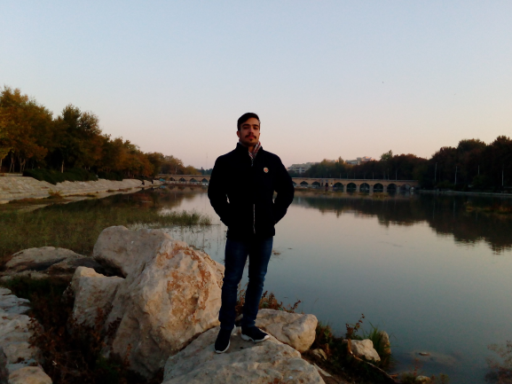

|  | |
کاشان شهری در استان اصفهان ایران است و نخستین واحه بزرگ در طول جاده قم-کرمان است که در امتداد حاشیه کویر های مرکزی ایران جریان دارد. از این رو جذابیت آن عمدتا ناشی از تضاد بی نظیر بین بیابان ها و فضای سبز واحه آن است. اکتشافات باستان شناسی در تپه های سیلک که در فاصله ۲٫۵ کیلومتری غرب کاشان قرار دارد، نشان می دهد که این منطقه یکی از مراکز اصلی تمدن در دوره های پیش از تاریخ بوده است. از این رو قدمت کاشان به دوره ایلامی ایران باز می گردد. پس از شهر های معروف اصفهان و شیراز در سطح جهانی، جاهای دیدنی کاشان از لحاظ تاریخی و معماری به یکی از مهم ترین مقاصد گردشگران داخلی و خارجی تبدیل شده است. اگر در حال برنامه ریزی سفر به کاشان هستید و اقدام به خرید بلیط قطار به کاشان کردید مجموعه الی گشت آماده ارائه خدمات می باشد. با ما همراه باشید.

کاشان شهری تاریخی است که مرکز شهرستان است و بخشی از استان اصفهان محسوب میشود که از شمال به آران وبیدگل راه دارد. این شهر زادگاه قدیمیترین تمدن شهرنشینی جهان در منطقه ای بنام سیلک با قدمتی بیش از هفت هزار سال است.[۲] کاشان مهد تمدن و فرهنگ سنتی ایران است. این شهر دارای بیش از هفت هزار سال قدمت شهرنشینی و یکی از زیباترین شهرهای ایران است. کاشان اولین سکونت گاه جمع نشینی و شهرنشینی بشر روی کره خاکی با نام تمدن سیلک بوده و اولین تمدن آریایی و اولین گویش و لهجه و زبان آریایی و فارسی کنونی از این تمدن و این شهر بودهاست… کاشان شهری با اصالت و با مشاهیر علمی و ادبی زیادی است و نقش پررنگی در صنعت گردشگری ایران دارد. عدهای از مورخین کاشان را با اصالتترین و اولین شهر ایران و جهان میدانند.[۳] جاذبههای گردشگری و اقلیم این شهر که دارای دو بخش کوهستانی و کویریست (که کویر مرنجاب و دریاچه نمک است) آن را به یکی از سکونتگاههای مهم در ایران بدل ساختهاست و آداب و رسوم گلابگیری و قالیشویان از مراسم سنتی این شهر است که سالانه بازدیدکنندگان زیادی را به خود اختصاص میدهد. مراسم گلابگیری معمولاً از اوایل اردیبهشت ماه شروع شده و مراسم قالیشویان در مهرماه هر سال در کاشان برگزار میگردد.

پخش آنلاین نسخه ی اصلی آهنگ روسی гюрза از Liranov : |
پخش آنلاین اهنگ روسی вечера از Rauf Faik : |
پخش آهنگ Лали از JONY : |
پخش آنلاین آهنگ روسی Devochka v trende : |